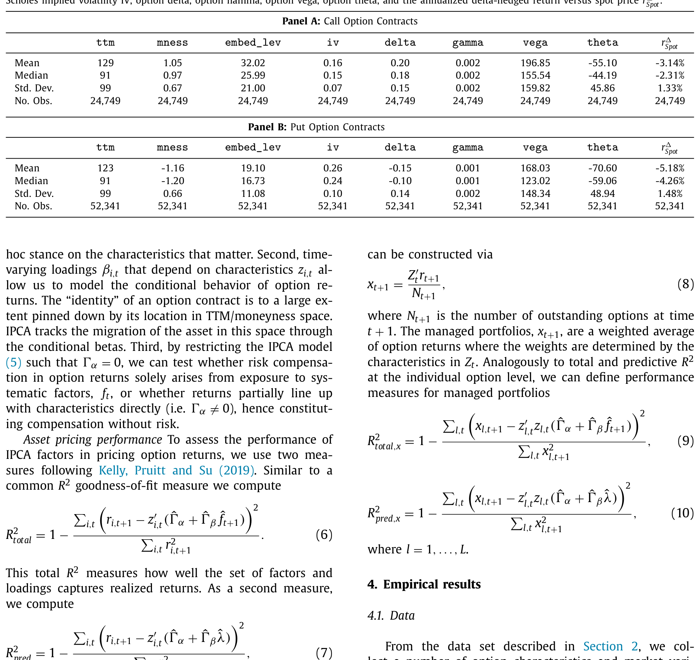
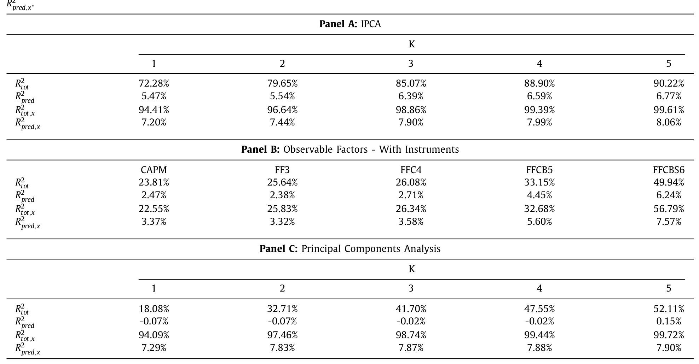
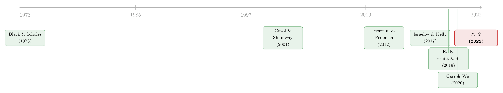

期权太「短命」，因子模型怎么追得上它？
本文读的是 Büchner & Kelly (2022, Journal of Financial Economics)：期权合约「寿命短、风险属性又一路漂移」，让股票市场惯用的因子模型几乎无从下手。作者把 Kelly、Pruitt、Su (2019) 提出的 工具化主成分分析 (instrumented principal components analysis, IPCA) 搬到期权上，让因子载荷随合约特征逐期变化——只用三个潜在因子，就能给 1996–2017 年标普 500 指数期权的横截面定价，并解释超过 85% 的月度收益变动。
1 一个「追不上」的资产
先讲一个让资产定价研究者头疼的事实。
我们研究股票、债券、外汇，几乎都靠同一套手艺：把收益率写成少数几个共同因子的线性组合，估出一组 beta，再看 beta 能不能解释横截面上的平均收益差异。这套手艺之所以能用，前提是——资产的风险属性是相对稳定的。一只股票今天是「价值股」，下个月大概率还是「价值股」；你可以用一段足够长的时间序列回归，把它的 beta 稳稳地估出来。
可是期权不一样。期权是会「死」的：一张合约从签发到到期，往往只有几个月，月度观测就那么寥寥数个。更要命的是，在这短短一生里，它的风险属性还在飞快地漂移——今天还是平值 (at-the-money) 合约，标的稍微一动，明天就成了深度虚值 (out-of-the-money)；随着到期日逼近，它对波动率、对跳跃的敏感度更是天翻地覆。
于是问题来了：一个寿命只有几期、而且风险属性一路狂奔的资产，你怎么用「估一组固定 beta」的老办法去追它？
时间序列回归追不上——样本太短。静态的主成分分析 (principal components analysis, PCA) 也追不上——它要求每张合约有一组不变的 beta，这与期权的本性正好相悖。正因如此，过去几十年里，期权收益的研究基本走的是另一条路：要么死磕无套利定价模型（Black-Scholes 那一脉），要么用投资组合排序 (portfolio sorts) 拼出一些事先指定的因子。前者优雅却容易设定错误，后者能解释的收益变动「underwhelming（差强人意）」——作者的原话。
这篇论文想做的，是把因子定价这套「别的资产类别都在用」的通用手艺，真正用到期权上。
2 识别策略：让 beta 自己「跟着特征走」
要理解作者的解法，得先回到资产定价最朴素的那个起点。
首先，从无套利假设出发，存在一个随机贴现因子 (stochastic discount factor, SDF) \(m_{t+1}\)，满足 \(E_t[m_{t+1} r_{i,t+1}] = 0\)，于是任何资产的条件期望收益都可以写成：
$$ E_t[r_{i,t+1}] = -\frac{\mathrm{Cov}_t(m_{t+1}, r_{i,t+1})}{\mathrm{Var}_t(m_{t+1})}\,\frac{\mathrm{Var}_t(m_{t+1})}{E_t[m_{t+1}]} $$
这个分解里，第一个比值衡量资产 \(i\) 对系统性风险的条件暴露，记作 \(\beta_{i,t}\)；第二个比值是因子的条件风险价格，记作 \(\lambda_t\)。当 \(m_{t+1}\) 对因子 \(f_{t+1}\) 线性时，横截面就满足一个线性因子模型：
$$ r_{i,t+1} = \alpha_{i,t} + \beta_{i,t}' f_{t+1} + \epsilon_{i,t+1} $$
接着，一个自然的问题是：\(\beta_{i,t}\) 怎么估？股票市场里我们用时间序列回归，但前面说了，期权的命太短，这条路堵死了。
真正关键的一步在于：作者不再去「回归」beta，而是让 beta 跟着合约特征走。这正是 IPCA 的核心思想——把每张合约的可观测特征（moneyness、到期时间、隐含波动率、内嵌杠杆、各种 BMS 希腊字母）当作 beta 的工具变量 (instrumental variables)。完整设定是：
$$ r_{i,t+1} = \alpha_{i,t} + \beta_{i,t}' f_{t+1} + \epsilon_{i,t+1} $$
$$ \alpha_{i,t} = z_{i,t}' \Gamma_\alpha + \nu_{\alpha,i,t}, \qquad \beta_{i,t} = z_{i,t}' \Gamma_\beta + \nu_{\beta,i,t} $$
把最核心的那一行——beta 的设定——拆开来看：
这一步的精妙之处，值得多说一句。注意 \(\Gamma_\beta\) 是一张不随时间、不随合约变化的映射矩阵：它把「特征空间」一次性映射到「因子载荷空间」。可一旦某张合约的特征 \(z_{i,t}\) 自己在动（moneyness 漂移了、到期临近了），它的 \(\beta_{i,t} = z_{i,t}'\Gamma_\beta\) 就自动跟着动了。于是，「时变载荷」这个期权最难缠的特性，被巧妙地装进了一个静态参数 \(\Gamma_\beta\) 里。我们要估的东西是固定的，但它生成的 beta 是时变的——这正是 IPCA 比静态 PCA 高明的地方（关于「时变 beta 长期被低估」这件事，可参见《时变的 beta，被低估了二十年的风险》）。
然后，模型用一套交替最小二乘 (alternating least squares) 在 \(\Gamma\) 和潜在因子 \(f_{t+1}\) 的一阶条件之间来回迭代，把映射矩阵和因子同时估出来。因子是潜在的——作者不替你事先指定它是「波动率因子」还是「跳跃因子」，而是让一大堆已实现收益自己「说」出相关的风险源在哪。这就绕开了「研究者必须先验地猜对因子」这道坎。
3 数据：把范围放宽，而不是收窄
期权研究有个常见的「偷懒」做法：只研究平值、只剩一个月到期的合约。因为这样设定误差最小，分析最干净。但作者反其道而行——他们的目标恰恰是要在单一模型里，把跨越不同 moneyness、不同到期的一大片合约都描述准。
- 数据来自
OptionMetrics，标的是标普 500 指数期权，区间1996 年 1 月至 2017 年 12 月；VIX 取自 CBOE。 - 观测单位是「单张合约 × 月」。收益是按日 delta 对冲后的月度持有期收益——把标的局部线性暴露剔除掉，留下的才是期权自身的风险（这是学界惯例，如 Cao & Han, 2013）。
- 用「远期 delta」度量 moneyness（恰好平值时绝对值为 0.5），样本限制在 forward delta 落在
0.01–0.5（看涨）与-0.5–-0.01（看跌）之间、到期1–12 个月的合约。 - 过滤掉买价为负、买价高于卖价、违反无套利、隐含波动率缺失、未平仓量为零的观测，并按内嵌杠杆的 1/99 分位 trim 掉极端值。

Table 1
值得强调的是：虽然作者「限制」了样本，但因为利用了 put-call parity，±0.5 这个边界其实并不苛刻，最终覆盖的存续合约比那些只盯 ATM 的论文要广得多。
4 主要结果：三个因子，和一次漂亮的「翻译」
先看拟合。作者用两把尺子量模型：一是 总 R² (total R²)，衡量 \(\hat\beta_{i,t}'\hat f_{t+1}\) 能解释多少单合约收益的当期波动；二是 预测 R² (predictive R²)，衡量模型隐含的风险价格 \(\hat\beta_{i,t}'\hat\lambda\) 能解释多少已实现收益里「可预测」的那部分。
结果相当有说服力：
- 一个潜在因子，就能解释 delta 对冲期权收益约
72%的变动； - 允许更多潜在因子后，拟合继续走高，五因子模型的总 R² 超过
90%； - 但要给横截面的平均收益定价（即让 alpha 消失），至少需要三个因子。这与 Carr & Wu (2020)、Christoffersen et al. (2018) 主张「低维多成分模型」的结论一致。
而那些事先指定的因子模型呢？无论是 Fama-French-Carhart 的各种变体，还是额外塞进 Frazzini & Pedersen (2012) 的「内嵌杠杆 / betting-against-beta」因子、Coval & Shumway (2001) 的跨式 (straddle) 因子，总 R² 都追不上 IPCA。和静态 PCA 一比，差距更刺眼：PCA 因为强行要求每张合约 beta 不变，根本没法刻画期权收益的行为。在风险-收益权衡的准确度上，IPCA 的 alpha 平均比竞争模型小约 1 个百分点 / 年——还不到对方的一半。

Table 4: compares the different implementations. To
讲到这儿，故事本该结束了。但真正关键的一步在于：IPCA 是个纯统计模型，它吐出来的三个因子是潜在的、是「黑箱」。一个统计上最优、却谁也读不懂的因子，价值要打折扣。于是作者做了一件漂亮的事——给潜在因子做翻译。
他们发现，这个基准三因子模型大致对应着波动率曲面 (volatility surface) 上的三种风险：
- 水平 (level)——整条波动率曲面的整体高低；
- 斜率 (slope)——曲面沿到期方向的期限结构，对应期限风险；
- 偏度 (skew)——曲面沿 moneyness 方向的倾斜，对应指数的尾部风险。
更妙的是验证方式：当作者真的按 level、maturity-slope、moneyness-skew 去对期权排序、构造可观测的因子时，这三个观测因子能解释那三个潜在 IPCA 因子时间序列变动的 70%–90%。一个统计上「盲找」出来的东西，竟和「水平-斜率-偏度」这套经济学语言对得上——这正是这篇论文最让人信服的地方。
不过作者也老实地补了一句警告。
这种「因子解读」只是对 IPCA 的一个粗略近似。IPCA 之所以表现更好、更稳健，恰恰在于它去找的是统计上最优的因子，而不是依赖某种 ad hoc 的构造；而且——只有让这三个观测因子的载荷随时间变化，才能逼近 IPCA 的解释力。时变载荷，才是真正的功臣。
哪些特征最重要？作者发现，隐含波动率和 vega 对刻画 beta 的时变贡献最大，对总 R² 的贡献也最大；gamma（对跳跃风险的敏感度）是另一个重要驱动。
5 文献脉络
把这条线索捋一捋，能看清这篇论文站在哪儿。
最早，期权收益的研究被无套利定价模型主宰。从 Black & Scholes (1973) 的香草期权模型出发，后人不断给它打补丁——Heston (1993) 引入随机波动率，再到各种带跳跃的设定。这条路优雅、能保证跨执行价与到期的一致定价，却以牺牲现实为代价，常常对不上期权收益的实证行为（Israelov & Kelly, 2017）。
接着是「排序派」。Coval & Shumway (2001)、Bakshi & Kapadia (2003)、Goyal & Saretto (2009)、Frazzini & Pedersen (2012)、Karakaya (2013) 等，把期权按少数特征分组，看组合的全样本平均收益。这一派有贡献，但能解释的收益变动比例始终偏低。

然后是「直接给期权收益建因子模型」这一支，也是本文最近的近邻。Jones (2006) 对短期深度虚值期权估非线性（可能含潜在因子）模型；Karakaya (2013) 给单只股票期权提出 level/slope/value 的三因子；Israelov & Kelly (2017) 用半参数方法估条件分布；Carr & Wu (2020) 把日度期权收益归因到标的一二阶矩的变动。
但真正关键的一步，是 Kelly et al. (2019) 提出的 IPCA——它本是为股票横截面设计，后来被 Kelly、Palhares、Pruitt (2020) 用到了公司债上。本文做的，正是把这把利器对准了期权：让特征做工具、让因子潜在、让载荷时变。它的位置，就在「无套利模型」与「事先指定因子」之间，开辟出第三条更灵活、也拟合更好的路（关于指数期权在不完全市场里的定价，另见《每一张期权背后，站着一个怎样的投资者？》；关于结构模型如何为期权市场「不一致」翻案，可参见《股与债，真的「各说各话」吗？》）。
6 评论与延伸（Q&A + 研究方向）
(a) 几个可能的疑问
Q：IPCA 和静态 PCA 到底差在哪？为什么后者「追不上」？
差在一个字：动。PCA 假设每张合约的 beta 是常数，再去做主成分；可期权的 beta 随 moneyness、到期飞快漂移，而且单合约只有寥寥几期观测，静态 beta 既不合理也估不准。IPCA 把 beta 写成 \(z_{i,t}'\Gamma_\beta\)，让它随特征自动变化，要估的 \(\Gamma_\beta\) 反而是固定的、好估的——既保留时变性，又把维度降了下来。
Q：「三个因子」是不是作者凑出来的？
不太像。判据是清晰的：拟合（总 R²）随因子增多一路走高，到五因子超
90%；但「定价」意义上的 alpha 要被压住，最少就得三个因子，再多收益递减。而且这三个因子能被翻译成 level/slope/skew，还和经济学上的波动率曲面对得上——既有统计判据，又有经济解释，不是硬凑。
Q：因子是潜在的，怎么敢说它是「水平/斜率/偏度」？
这是作者最克制的地方。他们没有直接「命名」，而是另外按 level、maturity-slope、moneyness-skew 构造可观测因子，再看它们能解释多少潜在因子的时序变动——答案是
70%–90%。也就是说，这是一个事后验证，作者自己也强调它只是「粗略近似」，IPCA 的真身仍是统计最优解。
Q：会不会只是过拟合？灵活的模型样本内总好看。
作者专门回应了这点。他们做了纯样本外 (out-of-sample) 的评估，基于 IPCA 洞见构造的交易策略，相对此前研究过的期权策略仍有显著 alpha；模型在样本外依旧表现优异。灵活性带来的好处，不是过拟合的产物。
Q：为什么要先做 delta 对冲，再研究收益？
标的价格变动是期权收益最大的驱动项。按日 delta 对冲，等于把「对标的的局部线性暴露」剔掉，剩下的才是期权特有的风险（波动率、跳跃、尾部）。否则因子模型大半在解释「标的涨没涨」，没意思。
Q：IPCA 有什么硬伤？
作者自己列了三条：一，因子是潜在的，解读困难（所以才要费力做「翻译」）；二，它不像传统无套利模型那样严格强加无套利约束；三，它假设风险暴露对特征是线性的。后续工作（如 Fournier, Jacobs & Orlowski, 2021）正是沿着「放松线性」这个方向走的。
(b) 几个可能的研究问题与提案
1. 把 IPCA 搬到单只股票期权 / 公司债期权上
【经济故事】本文聚焦指数期权，但框架天然适用于「特征丰富」的单名期权——每张合约都有精确可测的 moneyness、到期、隐含波动率。单名期权的横截面更宽，特征异质性更强，level/slope/skew 之外可能浮现公司层面的因子（信用、流动性）。 【可行性】中。
OptionMetrics有单名期权数据，IPCA 代码也公开；难点在合约数量爆炸带来的计算与面板极度不平衡，以及单名期权流动性差、价格噪声大。
2. 信用市场的「IPCA 期权模型」：给信用违约期权 / 公司债期权定价
【经济故事】Kelly、Palhares、Pruitt (2020) 已把 IPCA 用于公司债现券。一个自然延伸是信用衍生品——把久期、利差、评级、流动性当特征，看是否同样浮现出「水平-斜率-偏度」式的信用风险结构。这对理解信用尾部风险定价很有价值。 【可行性】中偏低。CDS / 公司债期权数据零散、报价质量参差，delta 对冲对应到信用 delta 也更微妙；但若数据可得，识别策略可直接照搬。
3. 外资持有人与期权风险价格的时变
【经济故事】指数期权的需求结构里，不同投资者（散户、做市商、机构）对尾部保险的需求差别巨大。能否把「谁在持有」作为额外特征或状态变量，看 IPCA 的 skew 因子风险价格 \(\lambda_t\) 是否随持有人结构系统性地波动？这能把「需求压力」与「因子定价」打通。 【可行性】中。需要把持仓 / 未平仓量按投资者类型拆分（CBOE、部分券商数据），识别上偏描述性，难做干净的因果，但作为相关性证据是 doable 的。
4. 用观测因子做「廉价替身」：低成本期权对冲策略
【经济故事】既然 level/slope/skew 三个可观测因子能解释潜在因子 70%–90% 的变动，那能否用它们构造一个易实现、低换手的对冲组合，去逼近 IPCA 的样本外 alpha？这关系到这套模型能否真正落地交易。 【可行性】高。三个观测因子的构造在文中已给出，回测只需标准期权数据；关键是诚实地扣掉交易成本与对冲的日度再平衡成本。
7 参考文献与我的判断
我的判断是：这篇论文的贡献，不在于发明了一个新模型，而在于找对了一把已有的钥匙去开一把别人以为打不开的锁。期权「短命 + 风险漂移」这个老大难，过去逼着整个领域要么退守 ATM 小样本、要么接受 ad hoc 因子；IPCA 用「让特征生成时变 beta」一举绕过了时间序列回归的死结，还顺手把统计因子翻译成了经济学家熟悉的 level/slope/skew。三因子、85%+ 的总 R²、alpha 减半——这些数字是扎实的。
对识别，我有两点保留。其一，「线性」假设是真实约束：期权收益对特征的依赖（尤其是深度虚值区的凸性）很可能是高度非线性的，作者也承认这点，后续非参数工作正是冲着它去的。其二，因子的经济解释终究是事后的——70%–90% 的解释力很漂亮，但剩下那 10%–30% 里藏着什么、IPCA 到底比「水平-斜率-偏度」多看见了什么风险，论文没有完全讲透。
后续我最想看到的，是把这套框架推到信用与外资持有人的方向：如果 skew 因子真的是「尾部保险」的价格，那它该随谁在买保险、谁在卖保险而系统性地波动——把「需求结构」装进 \(\lambda_t\)，也许能让这个潜在因子从「统计最优」走向「经济可读」。
参考文献
- Bakshi, G., & Kapadia, N. (2003). Delta-hedged gains and the negative market volatility risk premium. Review of Financial Studies 16(2), 527–566.
- Black, F., & Scholes, M. (1973). The pricing of options and corporate liabilities. Journal of Political Economy 81(3), 637–654.
- Carr, P., & Wu, L. (2020). Option profit and loss attribution and pricing: A new framework. Journal of Finance 75(4), 2271–2316.
- Christoffersen, P., Fournier, M., & Jacobs, K. (2018). The factor structure in equity options. Review of Financial Studies 31(2), 595–637.
- Coval, J. D., & Shumway, T. (2001). Expected option returns. Journal of Finance 56(3), 983–1009.
- Frazzini, A., & Pedersen, L. H. (2012). Embedded leverage. NBER Working Paper / Review of Asset Pricing Studies.
- Heston, S. L. (1993). A closed-form solution for options with stochastic volatility. Review of Financial Studies 6(2), 327–343.
- Israelov, R., & Kelly, B. (2017). Forecasting the distribution of option returns. Working paper.
- Jones, C. S. (2006). A nonlinear factor analysis of S&P 500 index option returns. Journal of Finance 61(5), 2325–2363.
- Karakaya, M. (2013). Characteristics and expected returns in individual equity options. Working paper, University of Chicago.
- Kelly, B. T., Pruitt, S., & Su, Y. (2019). Characteristics are covariances: A unified model of risk and return. Journal of Financial Economics 134(3), 501–524.